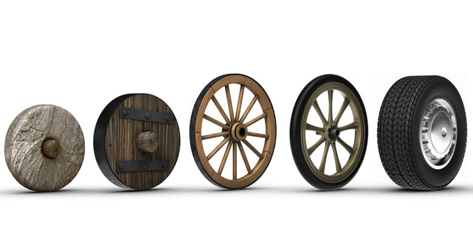
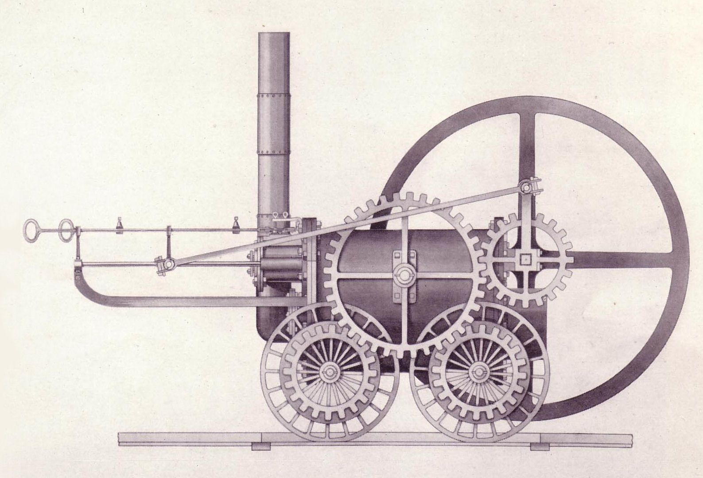
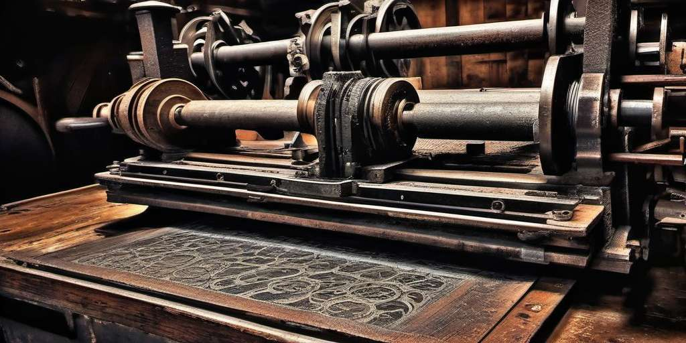
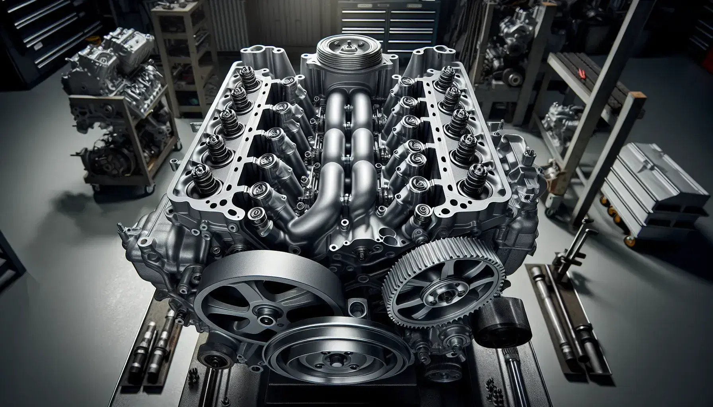

A lo largo de la historia, han habido multitud de inventos. Algunos han caído en el olvido, pero
otros han supuesto grandes avances sociales y tecnológicos para la humanidad. ¿Sabes cuáles han sido
aquellos que cambiaron el curso de la historia?
El fuego
Hacer y controlar el fuego supuso un antes y después para el desarrollo del ser humano. Gracias al
fuego el hombre pudo calentarse, generar luz, cocinar, fabricar pequeños utensilios e incluso
defenderse de ataques. Según las investigaciones arqueológicas, fue la especie Homo Erectus quien
descubrió el fuego, es decir el fuego se descubrió hace 1.6 millones de años. Por aquel entonces,
nuestros antepasados los utilizaban como armas de fuego, una herramienta que ayudaba a la
supervivencia.
La rueda
Data del año 3.500 a.C. en Mesopotamia. Facilitó el transporte y la movilidad de manera global y
cotidiana. Pero también produjo desarrollos importantes en el terreno de la industrialización. Es
uno de los inventos fundamentales de la historia de la humanidad y también fundamental para la
posterior Revolución industrial ya que es imprescindible para la maquinaria.

El arado
Apareció de manera más o menos coetánea a la rueda y también en Mesopotamia. Cambió el desarrollo del
trabajo del campo para abrir huecos y mover la tierra. Sin duda uno de los inventos más importantes
de la historia, ya que permitió la evolución de la agricultura. Arar aumenta la porosidad de la
tierra y, por tanto, que crezcan las plantas
La pólvora
Fue creada en el siglo X y tuvo un primer uso bélico, lo cual cambió la forma de combatir las
guerras. Después, se aplicó a trabajos como la minería, para la cual fue esencial.
El hormigón
Combinación de piedras, arena y cemento fluido que al endurecerse resulta muy resistente. Tras su
descubrimiento se convirtió rápidamente en el elemento esencial para la construcción de edificios.
¿Sabías que el hormigón tiene un alto poder contaminante sobre la atmósfera?
La bombilla
Thomas Edison y Josephn Swan, dos inventores famosos provenientes de Estados Unidos e Inglaterra
respectivamente, patentaron en 1879 y 1880 la primera bombilla. Su comercialización supuso un antes
y después para la sociedad. Con la aparición de la bombilla eléctrica, las horas de actividad humana
se han extendido cuantitativamente. La eficiencia energética es un paso para construir un planeta
más sostenible.
Máquina de vapor
Lo que se convertiría en uno de los inventos mas importantes de la historia, hizo su aparición en el
año 1698. Fue esencial para el desarrollo de la Revolución Industrial en las fábricas para el
movimiento de las máquinas, permitiendo una producción mucho más rápida. En el año 1769, James Watt
patentó la máquina de vapor como tal aunque previamente ya se habían hecho algunos desarrollos.
James Watt ideó un sistema que permitía aprovechar el calor para hacer evaporar más agua lo que
supuso una máquina de vapor mucho más económica y eficiente. Esto fue lo que permitió llevar la
máquina de vapor al mundo del transporte.

La imprenta
Con ella, la cultura y la información se popularizó y llegó a todo el mundo. La inventó Johannes
Gutenberg en 1400 y cien años después funcionaban en toda Europa de manera masiva. Gutenberg se
convertiría así en uno de los inventores más famosos e influyentes de la historia de la humanidad. Y
es que la imprenta ha tenido un impacto indiscutible sobre la difusión de la información y, por
ende, de la democratización de la educación.

Motor de combustión
El motor de vapor fue esencial, tanto como su eliminación cuando se creó este motor que convierte el
aire y el combustible en energía.

El ordenador
Charles Babbage sentó las bases para la computación a comienzos del siglo XIX. Y en 1936 fue Alan
Turing quien formalizó los conceptos de algoritmo y creó la famosa máquina de Turing. Ambos fueron
esenciales para la creación del ordenador moderno, que nació en 1938 de manos del alemán Konrad
Zuse.